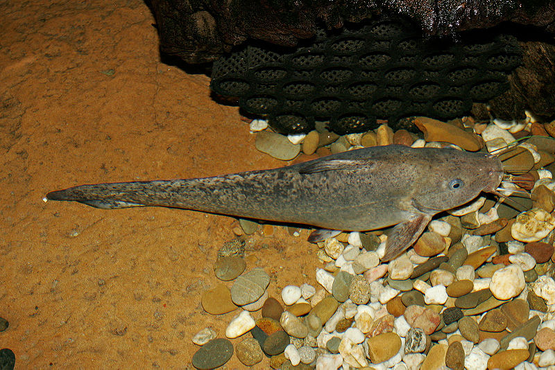
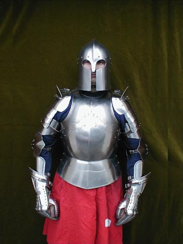
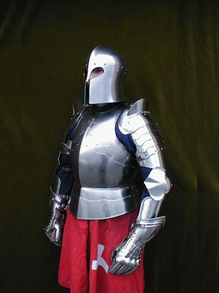
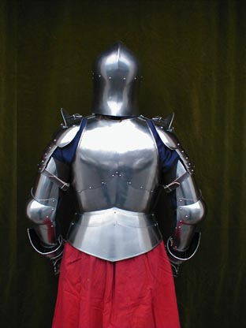
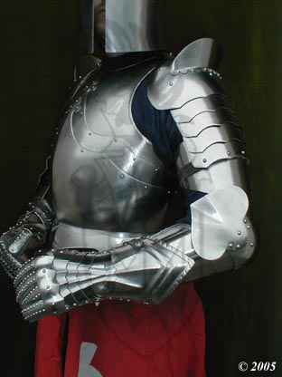
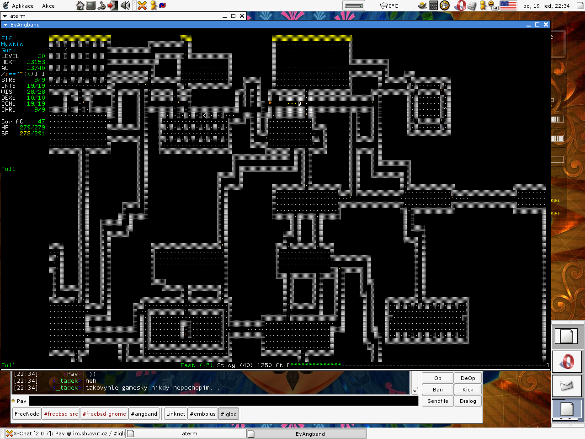
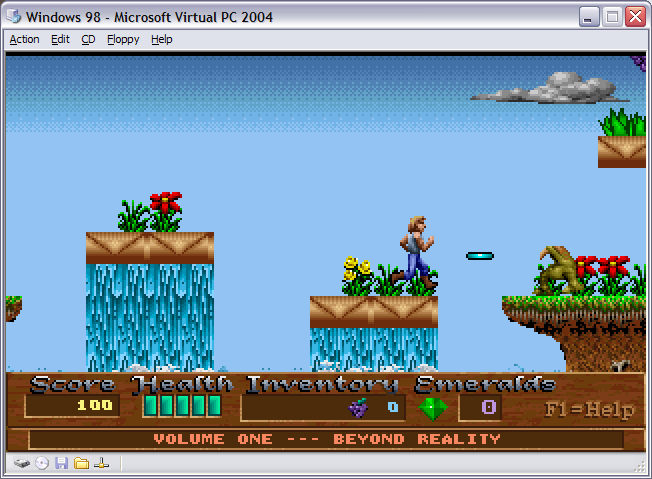
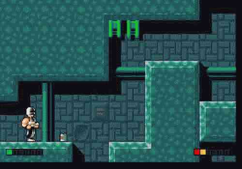

#229822 96 2006-09-17T18:07:51Z faemir cant wait

#239224 4 2006-10-10T17:14:40Z faemir very nice, apart from the ball there isnt really anything wrong
#239226 9 2006-10-10T17:17:32Z faemir type: avatar, orb
colour: #28A5FF & black
background: fractal brush
font: n/a see image below
http://www.opeth.pl/pliki/tapety/opeth_gr_1024.jpg
or
http://home.1asphost.com/Aiden/Opeth%20O.JPG
thanks in advance

#239282 11 2006-10-10T19:18:01Z faemir thanks, nicely done

#239699 62 2006-10-11T20:01:45Z faemir hmmm, dirty except no crotches, cause that _is_ harsh. (last time that happened to me was a rugby match, not funny)
#239711 134 2006-10-11T20:18:32Z faemir hmm, most of my artwork is fractals, but here are some of my drawings, they are pretty crap, don't be too harsh

the dragonhead is probably the best, also my most recent.
the middle one (who looks like a guy from KotOR, or i'm told) was my first, pretty shoddy.
the last one is okay, except the legs are horrible.


hmm, here are some fractals:


my DArt account is fingolfin92, if you wanna add me to friends or whatever.
#250944 (forumer) 6 2006-10-11T20:24:00Z faemir i can host you as a subdomain on my website, pm me if you are interested.
#239718 10 2006-10-11T20:26:42Z faemir ouch, well if you can play n then its okay isnt it

#239719 46 2006-10-11T20:28:38Z faemir Kate Beckinsale/Amy lee/Tarja Turunen
#239721 35 2006-10-11T20:31:20Z faemir if you ever get bored of minesweeper (or n - heaven forbid) then (shameless plug):
http://purepazaak.collateraldesign.co.uk/
its really fun.
#296920 120 2007-02-13T19:19:09Z faemir My experiences with vista are bad. I dual booted on the same hard drive as XP and it broke my XP partition. So i was forced to use vista. Most of my applications worked, though a few didn't which i really needed. In the end i turned aero off, because it is an ineffiecient ram,cpu & gpu wh*re. Oh and the nvidia gpu drivers are reported to cause lots of blue screens (they are in beta, but you need them to play games properly).
Let's look at the 'good':
"flip 3d". I'll stick to alt-tab: quicker & doesn't use up lots of my ram/cpu/gpu
sidebar - gimmicky ram/cpu/gpu eater.
new theme - There are much better ones you can get for free for xp on deviantart
instant search - there are many equivalents for XP, one is google desktop search.
new start menu that doesn't take up loads of space - i use blackbox on XP anyway.
It 'manages' your games. manage as in have a games tab on the start menu which is a folder with links to start your games. whoopie, i can do that too: create new folder, drag shortcuts into it.
windows defender already built in - yay, a useless spyware removable program ^^. more waste of my hardrive space.
UAC - idea borrowed from linux, I don't have a problem with that, but the vista one is so bloody practive; I had to turn it off after a few minutes because it took so long to accomplish tasks.
Also did you know microsoft are already looking for volunteers to test out service pack 1... says something about it's reliability. Personally I am going to wait until atleast the end of 2007 to use vista, and that is only for direct x 10, which they should of put on XP. Do you know why they didn't? because they are desperately trying to find ways to force people to use vista; they have now hit the same problem as the office developers - convincing people they _need_ the new version.
#296923 33 2007-02-13T19:30:33Z faemir make sure you get all the good extensions, a must would be adblock plus
#296926 727 2007-02-13T19:59:47Z faemir here's my linux partition. I will post my windows partition when i can be bothered to swap over ^^

#296937 3 2007-02-13T20:27:36Z faemir getting my little collection now...
#296953 9 2007-02-13T20:55:58Z faemir http://www.collateraldesign.co.uk/wallpapers.zip
EDIT: All are found, the backdrops i make are for me only
#296975 5 2007-02-13T21:35:58Z faemir ouch, nightmare :\
check out:
http://www.nomoreaolcds.com/
as well
#296976 37 2007-02-13T21:47:33Z faemir Can't say i have any experience with this kind of thing, but the best thing to do would definitely be to talk with your mother. Talking to your father would totally wreck things. It was said before, and I totally agree that she obviously wants to keep it together if she is trying to keep it secret.
And you never know, you confronting her might convince her to stop - feeling guilty over your own child...
#296984 18 2007-02-13T21:59:59Z faemir me: This is finished.
her: fine.
to friend: that was the best thing that had ever happened to me.
friend: haha
then she starts crying. Kinda felt guilty :\
#296992 29 2007-02-13T22:14:01Z faemir The only time when i have ever had to stick up for a friend ended up with me getting seriously beaten
Having 7 people ambush you, hold you down, then they take turns in bashing your head in is not nice
At least one of them fucked up his knuckle _real_ bad (just picture your index fingers knuckle moving down an inch

)
#297008 126 2007-02-13T22:35:05Z faemir hmm, most are taken however, i have a backup plan: linux apps ^^
windows:
7zip - the best archiver.
xchat port - might of been said
mysql tools - haha! an original one
filezilla - best ftp client. also open source ^^
notepad++ - best text editor ever.
source edit - very close to as good as notepad++
foobar200 - said before, but heck, it rocks.
miranda - best instant messenger, due to it's amazing customizability.
feedreader - very nice rss/atom reader.
unlocker - very useful for "cannot delete x file because...." situations.
partition magic - best partitioner, just been bought by symantec though. damn.
cdex - nice cd to mp3 / mp3 to cd convertor
xfire - pc-gaming orientated chat program.
steam - the best fps is played through this.
greasemonkey - extension for ffox, lets you change websites to how you want
many more ffox extensions...
linux:
amaroK - best media player ever. (it even retrieves album art from amazon ^^)
xchat - the original version.
gaim - "
gimp - "
blender - "
and of course - linux
fedora core & ubuntu FTW distro-wise.
#297011 22 2007-02-13T22:40:57Z faemir well, i haven't been on the forums long (well i registered ages ago but never came on), but judging by the old posts i have been seeing by you, you seem like a good person to have on some forums
Also, that avatar is infinitely annoying. nearly as bad as that sig that has lol animated in the most seizure-triggering colours ever.
hehe, i actually joined before you
#297023 17 2007-02-13T22:52:35Z faemir rincewind: nice site
[off-topic]
is your avatar ask a ninja by any chance O.o ?
and w00t for the kid a bear
[/off-topic]
here is another one i forgot to add:
http://i16.tinypic.com/2r62tle.jpg#297040 19 2007-02-13T23:10:12Z faemir nice vector *adds to collection*.
The lines at the bottom right are a bit out of place imo, but hey, it's your bd
#297041 5 2007-02-13T23:12:07Z faemir online is definitely the best place to go - my friend got 7 then sold the left over 4 on ebay for double price ^^.
yeh, ebay has them, but often over priced
#297044 13 2007-02-13T23:16:34Z faemir good game, a bit under rating wise, perhaps 75%?
It would be better if it was free ^^
#297047 31 2007-02-13T23:21:59Z faemir Name- BZFlag
Game Type- 3d first person tank shooter O.o
Web site-
http://www.bzflag.org/
info/description- very fun 3d tank game, lots of weapons etc. works on loads of OSs as well
Name- Frozen Bubble
Game Type- best bust-a-move clone ever.
Web site-
http://www.frozen-bubble.org/
info/description- see game type. version two is better but linux only. version 1 is still very cool
#14036 1 2007-02-13T23:35:33Z faemir Do people think the Final Fantasy series is overrated?
or do you particularly like one or particularly hate one?
#297066 18 2007-02-14T00:17:18Z faemir doom is treasured in my heart :3
(you forgot to have quake on the list)
#297183 8 2007-02-14T09:53:33Z faemir the unmentionable one being X-2 perhaps?
Well, personally I do like them, and they are top quality rpgs, however, they are overrated, like most hyped-up things. Also, the latest ones haven't really done anything nice & new, just better graphics, which is a bit of a dissapointment
#297185 2 2007-02-14T10:13:55Z faemir looks pretty good, i might try it out later
#297186 64 2007-02-14T10:22:21Z faemir christian here.
The poll results haven't surprised me.
#297187 30 2007-02-14T10:23:49Z faemir music & drawing
though if we still had computers but not video games then include web design & fractal making ^^
#297188 25 2007-02-14T10:26:07Z faemir count me in
#297189 35 2007-02-14T10:28:03Z faemir to end stupidness by some means that are nonviolent ^^
shame this isn't in B&T
#297191 89 2007-02-14T10:35:36Z faemir This is a great opportunity to plug, but I won't.
http://www.happypenguin.org/ - linux games for everyone :3
http://www.deviantart.com/ - of course.
http://www.last.fm - of course.
http://www.pixel2life.com/ - nice tutorial finder.
http://forums.skinconsortium.com/ - if you make a skin for something, but don't have a clue on how to code it, they can do it for you
#297193 113 2007-02-14T10:44:48Z faemir romaniac, you retarded sad forum poster. I mean look at your signature! It's a million lines long filled with crap that you have culled from the net to put in your signature like everyone else does.
#297194 11 2007-02-14T10:47:22Z faemir you are particularly wanting it to be used in... (all categories).
13 cents? wow
(actually I can't talk 'cause that's more than I have ever given to anything
)
#297196 11 2007-02-14T10:51:16Z faemir It would probably look out of place unless done very carefully - And there is no real need, it's funny enough watching the ninja be bounced around as a pile of flesh on the mines anyway ^^
#297199 7 2007-02-14T10:56:10Z faemir sounds like a good idea, perhaps have a special set of maps which look the exact same, but have these included
#297201 90 2007-02-14T10:59:23Z faemir i might get a 360 just for it :3 Well other games as well....
#297202 209 2007-02-14T11:02:48Z faemir if you made a java version, then i could use it on linux as well
#297225 100 2007-02-14T15:00:55Z faemir well, it's been great before now, and with you two hopefully it will get even better
#297227 15 2007-02-14T15:08:46Z faemir also, if you donate loads, then they won't need to take time out to work to get cash, and focus on robotology, n 1.5 & n+ more. therefore:
donations = what we want quicker ^^
#297277 6 2007-02-14T18:29:03Z faemir like what psycho said - some sort of trailer for N
#297293 10 2007-02-14T19:37:16Z faemir oh sorry, i mis-interpreted it. still sounds fun
(on a side note, can we make a trailer anyway?)
#297309 431 2007-02-14T20:31:53Z faemir see you lots on the forums
80%
#297354 54 2007-02-14T22:05:20Z faemir once a day is good for me.
#297383 17 2007-02-14T23:03:35Z faemir i think it's more who contributes the most, not who is the oldest
#297397 38 2007-02-14T23:46:22Z faemir Zres: that or to test games
I think a combination of both would be nice. Heck, being the third metanet developer would be wicked
#297582 117 2007-02-15T11:21:13Z faemir your so sad that you came up with this thread. freak.
#297687 61 2007-02-15T20:35:52Z faemir 
KA will get this.
#297692 63 2007-02-15T20:45:56Z faemir here is a pretty hard one:

here is easy album but rubbish drawing

#297889 126 2007-02-16T12:27:24Z faemir 1) PINK! :3
2) juggling 3/4/5 mines while hovering mid-air
3) juggling upside down somewhere in the caves
4) fingolfin
#297890 67 2007-02-16T12:30:49Z faemir completed 2 columns
nearly done 2 more though .
#297892 23 2007-02-16T12:34:39Z faemir hard to choose between l3X & JF, but my vote goes to JF...
#297893 16 2007-02-16T12:38:10Z faemir well, the longer it takes hopefully the better it will be :3
I can wait now, supreme commander is out >:-)
#297896 463 2007-02-16T12:50:42Z faemir mind if I join the team?
you can see all the recent signatures I have done here:
http://rs2lords.co.uk/signatures/all.asp
all made in the gimp, not photoshop
sorry I didn't just post links, but there is more than 5 there...
#297910 121 2007-02-16T13:35:19Z faemir and you're stupid enough to insult a mod!
you idiotic cow-whoring newb.
and just because i'm a newb, doesn't mean i can't call you one
#297917 574 2007-02-16T14:02:54Z faemir this is a bit of a late welcome thread post, but, yeh ^^.
I registered when i first played N, but only started using the forums 2 days ago.
My name on the IRC is moredhel, just to make things more complicated
small bio: my name is daniel cohen, i'm 14 and i'm obsessed with linux. I like doing stuff with GIMP/Photoshop.
Oh and I make free website designs - just ask me if you need one
#297918 51 2007-02-16T14:08:05Z faemir well i'm 14 nearly 15. I think it is due to the fact that people over say, 16, have less time on their hands and therefore wouldn't spend their time on these forums/ the irc channel. Whereas if you starting playing N & posted on the forums, at a younger age, then kept on posting, you would make the time to do so when you are older, as it would have higher priority in your life
#297924 468 2007-02-16T14:43:22Z faemir EDIT: Test time..
Primary colours: Red and white
Theme: Abstract Grunge
Renders/images: None
Text: xdude
Complexity: Medium
Matching avatar (yes or no): yes
Dimensions (size): 450w by 100h
Preferred artist (optional): fingolfin
no render?! how do you do a grunge without a render. come on.
EDIT: By the way, i'm a bit rusty - in that i haven't made a sig for about a year ^^
#297938 470 2007-02-16T17:22:20Z faemir xdude:
sorry it isn't great

if you want the original then pm me.
[bottom right writing says 'i'll find you eventually']

#297947 472 2007-02-16T18:27:48Z faemir what part of it do you want as the avatar? the bit with xdude or diablo's face?
EDIT: or diablo's face with xdude written on top.
#298298 480 2007-02-17T19:12:41Z faemir sorry for the late avatar, but i've been busy....

(the xcf is there as well)
#298353 23 2007-02-17T22:25:33Z faemir the second link doesn't work :\
#298355 10 2007-02-17T22:29:13Z faemir @ LV: what does MLM stand for?
@ Keron: So basically you can't talk about anything that is illegal in the US then?
#298360 129 2007-02-17T22:39:12Z faemir edited my place due to my overlooked conflict with bloodbath's request. atleast I can be upside instead ^^
#298363 20 2007-02-17T22:44:36Z faemir I really didn't want to know that, but know I do, I had to look at wikipedia. ARGH.
EDIT: don't give opinions that require you to write out what it really does.
#298366 107 2007-02-17T22:47:54Z faemir an rss feed of it would be nice, if you can be bothered to set it up, it would be appreciated
#298377 216 2007-02-17T23:08:48Z faemir cool, it's nice to be stand-alone instead of inside N, 'cause N is a bit of a resources hog
#298875 200 2007-02-19T09:46:09Z faemir try using xchat:
http://www.silverex.org if you can't connect with mirc & don't wanna use chatzilla..
(on a side note, you do have to add the server manually)
#298876 87 2007-02-19T09:53:18Z faemir suicides here, then mines. Funnily enough, the others are a _long_ way off
#299250 6 2007-02-20T14:24:17Z faemir congratulations, I can honestly say that I'm genuinely jealous, I've worked hard for several months, and Haven't got very far. Don't drop the game yet though, make sure you participate in all the competitions etc. Hopefully with your experience, you will know what makes a hard challenge and make some good maps for numa/bitesize
Yet another person to look forward to getting even with
#14161 1 2007-02-21T17:47:44Z faemir Trying to get N working on linux mint, - basically it's a modified ubuntu with all closed source codecs etc built in, and a number of extras, but is totally compatible with all ubuntu stuff, so just imagine i have ubuntu 6.10
when I double click the icon nothing happens, so I tried in bash instead and it gives me this:
while loading shared libraries: libgtk-1.2.so.0: cannot open shared object file: No such file or directory
flash 9 _is_ installed btw
Anyone know what is wrong?
thanks in advance
#299634 5 2007-02-21T20:54:09Z faemir nice, that's very quick for completing in my books

#299635 38 2007-02-21T20:58:26Z faemir hehe, all the first few in the first column - when I try to get highscores, I always seem to mess up.
On a friends pc I played the infamous 88-4. Ick.
#299639 10 2007-02-21T21:04:39Z faemir very nice maps for first times - my maps are so terrible I don't even post them
#299640 3 2007-02-21T21:05:12Z faemir joined :3
#300329 34 2007-02-23T20:40:40Z faemir A level limit is the way to go in my opinion, with limited features. Simply because ones that have a time limit with the full features always get cracked so you have unlimited time.
For anti-piracy methods, well something like having serial keys given out that are on a database, so then you wouldn't be able to develop a keygen. Shared serials wouldn't work well either, because it wouldn't let one serial logged in at one time. Perhaps you could make most/ all of the game not work without the key.
If it is starforced... well would then hope that it was a complete failure, But i'm sure that they would not use starforce
#300337 31 2007-02-23T21:02:58Z faemir *clicks the second option*
HEAVEN & HELL FTW!
#300339 103 2007-02-23T21:09:48Z faemir Meaning of life? I really don't believe there is one, and if there was, we would never find out what it was, then prove it, and also, how would we prove it was a the meaning of life?
^^
#300342 53 2007-02-23T21:12:49Z faemir Perhaps you should try to get on pimp my ride
#300345 26 2007-02-23T21:16:45Z faemir that's classic
My schools lockers use keys - great idea or what .
mine in particular sucks - my key doesn't work it in anymore, and the master key never has. Everyone else's seems to though .
#300349 126 2007-02-23T21:19:53Z faemir yeh, they have to also have a windows vista N version without wmp in it.
#300684 39 2007-02-24T18:26:34Z faemir the imagery
#300686 7 2007-02-24T18:28:32Z faemir getting home from school and doing naught but listen to music and talk on the irc channel
#300688 38 2007-02-24T18:33:17Z faemir The whole World is full of fake people.. retards.
#300697 94 2007-02-24T19:01:12Z faemir i second that ^
and Base, I can't look at your avatar without bursting out laughing, and everyone around me is like WTF? .
EDIT: extortionate software pricing is another thing i detest, it's rediculous, several hundred pounds for photoshop, then 12 months later they want you to pay up again for a few new features!
another company comes to mind as well coughM$cough.
Well, actually, I think the 65 they are asking for home premium is very reasonable, but they still suck, with that drm downgrading quality stuff. not to mention wga.
#301033 58 2007-02-25T16:30:35Z faemir i would of given 7.5, but with the same picture tiled 3 times in his signature it goes down by 0.5
7
#301034 3498 2007-02-25T16:33:12Z faemir it could do with another white border at the very edge, but other than that, I like it
7/10
#301669 14 2007-02-27T21:55:36Z faemir I was never any good at poetry....
Awesome set of maps, if this is a member from the forums - very nice.
If this is a newcomer (like me), then I've gotta hand it to you - they are superb for a newcomer.
#302235 21 2007-03-02T19:09:26Z faemir left - a
right - d
jump - spacebar
others - default
i play fps too much >=3
#303048 114 2007-03-06T21:43:04Z faemir well, if the UK one was in london, it's near enough, but it's not in any holidays, so i don't see how i can just take a whole flippin' week off school!
#303052 72 2007-03-06T21:50:44Z faemir ouch, i feel so sorry for the guy, even if it was partially his fault, but still, that shouldn't of happened.
another sad case of reality. I went to the same school as holly wells & jessica chapman...
#304389 701 2007-03-11T11:43:28Z faemir my question is one of basic instinct:
I get cravings to buy the newest thing, whether it be a dslite or an ipod...
what do I do to stop myself?!
#304390 4 2007-03-11T12:03:07Z faemir nope, and I sincerely hope I never do.
#304485 25 2007-03-11T19:58:48Z faemir get some fractal brushes
and you didn't need photoshop to make sigs - mine are 100% gimp.
>=3
#304999 318 2007-03-13T21:02:47Z faemir damnit! I'm new to the forums (or rather to look at the forums), and xdude was one of the people who stood out and who I noticed, plus he made kickass signatures. :'(
#305001 14 2007-03-13T21:13:22Z faemir I go straight up >=3
#305009 5 2007-03-13T21:25:16Z faemir 10 ZOMGBBQmeters
^ EDIT: Borealis: ask you on irc?
#305244 321 2007-03-14T21:10:21Z faemir first xdude now CTB. This isn't a good week :'(
hope you do come back mate
#305708 4 2007-03-16T22:03:39Z faemir as long as you stay on the irc
#306075 11 2007-03-18T14:44:46Z faemir also making everything have a purpose makes it feel much smarter as a level
#306393 713 2007-03-19T21:44:54Z faemir thanks for the answer >.> [end sarcarsm (just for Linus and his inability to detect sarcasm)]
#306396 44 2007-03-19T22:00:29Z faemir argh, I forgot to email. This is a very touching page though.
#307005 3 2007-03-22T19:52:54Z faemir Is it not the same? Screenshots seem the same...
#307009 59 2007-03-22T20:01:50Z faemir sounds american... he might not be from america. Or are you saying american laws goes on here?
#307014 25 2007-03-22T20:17:54Z faemir ^ haha, ditto
#307016 5 2007-03-22T20:24:41Z faemir brilliant
*me sends his first chain email ever*
#307934 15 2007-03-26T21:08:58Z faemir i have to try this
btw, how long ago was the last one (wishing to know how often these will be on for).
#308102 308 2007-03-27T13:31:21Z faemir KA
#308103 2057 2007-03-27T13:33:16Z faemir no avatar...
#308105 3575 2007-03-27T13:35:56Z faemir i hate that avatar
ok signature, a bit bare at the top left though. The render is a bit dark on the right and a tad overcontrasted.
6.5/10
#308122 144 2007-03-27T16:06:43Z faemir first post because you are so bad at signatures that you can't even display it as it is so terrible.
#308123 207 2007-03-27T16:09:09Z faemir weaver_of_fate
#308124 123 2007-03-27T16:09:54Z faemir mmmm...pie
#308125 85 2007-03-27T16:17:52Z faemir Level 30:
a fatal error has occurred at 0035:F23479T8 in DxH OPP(89) + 487621E0.
Windows has been stopped to prevent any further damage.
Please purchase a retail copy of window$ vista for a fix for this gaping security hole. and also purchase it if you want direct x 10, because we like forcing you to upgrade because there aren't any decent features that would make you upgrade freely.
[ERROR: THIS COPY OF WINDOWS MAY NOT BE GENIUNE. PLEASE HELP US, VISTA HAS SOLD NOTHING, AND WE NEED TO EAT
;_; ]
#308126 260 2007-03-27T16:19:28Z faemir original, but 3 syllables rules 2. 7/10
#308128 26 2007-03-27T16:40:50Z faemir i'm happy to wait for as long as need be
#308129 19 2007-03-27T16:43:09Z faemir good ol' bedroom
#308131 28 2007-03-27T16:52:37Z faemir i hope LP's new album is good. the jay-z album was terrible >.>
#308132 8 2007-03-27T16:54:06Z faemir can i steal your job?
#308136 33 2007-03-27T17:05:13Z faemir I hate it how people always think there are only two operating systems in the world. Atleast Tsukatu doesn't
I believe linux is the answer for several reasons, but the security part is an important factor - windows isn't that secure, and you need to have lots of extra software to even dare use a pc on the internet (in my opinion). Linux has the security built directly into it, so it really doesn't need anti-virus, firewalls etc, but of course, there are those avaliable for paranoid people because the OSS library is the biggets in the world
As far as I know macs are the same.
The funny thing is that windows got it's dominance because at the time of 3.1, it was a cheaper alternative to the macintosh. I'm wishing for the day that software and hardware companies consider all operating systems.
(oh also, the UCA in vista was an idea taken from linux, but they manage to break it.
)
#308138 31 2007-03-27T17:13:18Z faemir for the first post, if you cross your eyes/or blur the picture some other way, and cover up the rest, they do look the same
#308357 26 2007-03-28T19:19:29Z faemir yes it is, it makes it harder
#308588 128 2007-03-29T20:32:23Z faemir voting for the goo goo dolls ^^
#309552 5 2007-04-02T09:02:53Z faemir BT.... leaving?
Well, I haven't been here long, despite having played N since the beginning of 2006, but during my time on these forums and the irc, you have certainly been the person to make the biggest impact on me, and I wish you all the best in what ever you go and do instead of spending your life on here.
It's just a shame that I joined this community so late, and missed out on the best part of it.
#309553 13 2007-04-02T09:06:29Z faemir I reckon we could easily out vote any other games easily if we all voted.
*gets his proxy ready to vote 300 times*
#309554 2 2007-04-02T09:07:28Z faemir that's my homepage :\
#309556 3 2007-04-02T09:20:39Z faemir supreme commander owns C&C's ass.
#309564 8 2007-04-02T09:58:41Z faemir I am utterly confused
#309565 27 2007-04-02T10:06:23Z faemir new people :3
#309566 8 2007-04-02T10:07:39Z faemir I just /can't/ wait till next year. >.>
#310649 119 2007-04-07T04:19:42Z faemir 

#310674 136 2007-04-07T05:12:27Z faemir http://profile.myspace.com/index.cfm?fusea...endID=150166973
cartefalse are a cover band of led zeppelin, a
popular band. When they were around, their style of music was regarded as the
popular genre, although we would think it rock nowadays.

#310738 175 2007-04-07T07:52:59Z faemir #310750 186 2007-04-07T08:22:22Z faemir #310764 195 2007-04-07T09:06:33Z faemir #310794 218 2007-04-07T10:47:56Z faemir http://numa.notdot.net/map/85156
w00t for my first ever map, no thought whatever put into it, and rushed!
please don't insult me -.-;
#310817 233 2007-04-07T11:37:37Z faemir 



that beauty costs 1300
#310835 246 2007-04-07T12:49:21Z faemir http://collateraldesign.co.uk/bored.jpg
me with a slightly over-done expression, but hey, it was boring walking up there and seeing that thing for the 10000th time ^^
#310841 251 2007-04-07T13:09:16Z faemir http://di1.shopping.com/images/di/56/7a/44...150x188-0-0.jpg
a USB complete bible keychain. Although he knows the bible off by heart, he would take it to people and copy it onto their computers.
#310861 264 2007-04-07T14:32:14Z faemir http://numa.notdot.net/map/85172
If somebody doesn't get this, then I will be slightly worried.
#310887 278 2007-04-07T15:54:58Z faemir here is mine...
I don't like it personally, but oh well. points are points
Attachment (lost): post-13-1175961298.txt
#310894 281 2007-04-07T16:08:18Z faemir http://maps.google.co.uk/maps?f=q&hl=en&q=...8,0.159988&om=1
botany bay in sydney.
because: the fish can make out in privacy in the plane that fell off the edge of the runway into the sea.
/And/ because it's a warm climate-ish there. Not too many evil big fishes that will eat it either.
#310934 298 2007-04-07T18:33:26Z faemir #310975 310 2007-04-07T19:49:51Z faemir http://metanet.2.forumer.com/index.php?sho...ndpost&p=250951
that's it. a shameless plug. admittedly I like the game, but it was so cheeky to post it then
#311011 319 2007-04-07T20:55:16Z faemir here is mine... I did better (around 2000), but the drones around the edge started in a diff place, so it didn't count
Attachment (lost): post-17-1175979316.txt
#311026 324 2007-04-07T21:13:43Z faemir 
^ A good old english muffin. Freshly toasted then smothered with butter which melts all the way through. mmm......

#311061 339 2007-04-07T22:59:03Z faemir 
(go alien kitten of the hero squad!)
#311074 345 2007-04-07T23:28:48Z faemir #311105 352 2007-04-08T00:46:42Z faemir http://numa.notdot.net/map/85258
not finished really... but meh.
#311130 358 2007-04-08T01:39:37Z faemir done. virtually none of the gold though

#311158 362 2007-04-08T02:39:16Z faemir 1 - Maximo, LittleViking001, Tktktk, Nevermore, Sweep, Lucidium, and Kablizzy.
2 - 293 maps on numa, 238 in map packs = 531 in total.
3 - 18.
4 - tens of thousands.
5 - 23.
6 - 11
7 - all 8.
8 - 120.
9 - 19th november 2005.
10 - in my opinion: too many times. really: kab: 0, blue: 5, daily:
[infinity sign].
#311164 367 2007-04-08T02:53:42Z faemir agh, i'm glad I got one right that no-one else did
#311171 370 2007-04-08T03:10:29Z faemir Elliot: I doubt sex for you is about making babies, because you'd
probably just eat them anyway, and driving over to Dr. Cox's place and
pleasuring him while he watches sports hardly counts as revenge.
Sharks eat baby fish. And sharks live in tropical waters.
[from scrubs series 1 in 2001.]
#311206 380 2007-04-08T06:07:53Z faemir #311215 385 2007-04-08T07:21:54Z faemir name: ken masters/ken masutazu
reasoning:
The obvious choice is Ken Mazutazu. Although the obvious
choice would be Ryu, who is the main character in the street fighter
series, there are many benefits for choosing Ken.
Every single seven year old wannabe will always pick Ryu, and
you wouldn't want to follow the crowd, especially not the seven year
old one. However, Ken is still easily well known and kickass.
As to establish himself as 1337, he has to be different.
Therefore he does not participate in the first street fighter
tournament, making him seem far more badass than cliche-king Ryu.
When it comes to the second street fighter tournament, he
spends all of his time with his girlfriend, instead of practicing like
everyone else. He goes on to win the second tournament and kick Ryu's
butt.
In the third street fighter, once again, he enters the
tournament. Some little arrogand kid becomes his student, and thinks
he's the guy. Ken happily beats him in the tournament. He also totally
wipes the floor yet again with Ryu, the so called 'main' character,
who is 'the best'.
Ken's appearance owns. His striking spiky short hair in a
brilliant blonde contrasting brilliantly with a stark red Gi, with the
arms ripped off to look even better. His brown gloves go well with his
red Gi, compared to Ryu's stupid looking red gloves, which stand out
as odd compared to his boring white Gi.
Ken's fighting style is much cooler as well. His moves are
flashy and look awesome, yet still retain the power compared to the mediocore
Ryu moves that look lame.
EDIT: typo ^^
#311226 390 2007-04-08T08:22:48Z faemir 
looking comfy isn't so much the bed they are on etc; but what is happening around them, yet they are still peaceful.
I have a less funny one if you really want though.
#311242 395 2007-04-08T10:03:12Z faemir http://www.fashiondig.com/shop/detail.asp?...10&ItemID=29603
IT EVEN HAS TROPICAL FISHIES ON IT! (if you can see through the water... )
#311257 399 2007-04-08T11:18:30Z faemir
Description: A condom is a device, usually made of latex, or more recently polyurethane, that is used during sexual intercourse. It is put on a man's penis and physically blocks ejaculated semen from entering the body of a sexual partner. Condoms are used to prevent pregnancy, transmission of sexually transmitted diseases (STDs - such as gonorrhea, syphilis, and HIV), or both.
It is more effective than other forms of coontraception for many reasons.
1. It physically stops bodily fluids from passing between the people totally - simpler and more successful, compared to other things such as the pill which involves far more sophisticated methods of preventing, and is less reliable.
2. There are no side effects, unlike some other contraception devices.
3. The partner can help the other put it on....

4. It's the second longest standing form on contraception, and so is reliable. The oldest is simply timing so that it does not take place during the womens period; however this is not a practical solution for post-prom activities.
5. Cheap! Condoms are cheaper than various other forms of contraception, and in many places the government/other organizations hand them out for free.
6. It also stops any STDs being transfered, which, many/most other forms of contraception don't prevent.
7. they come in different designs/shapes/textures etc, so if you are picky....
hmmm, on wikipedia it says: This article is about the contraceptive device. For the town in France, see Condom, France.
#311266 403 2007-04-08T12:21:39Z faemir 
that's as far as I've got so far.
#311282 26 2007-04-08T13:42:30Z faemir i used to have loads, but now I have a brand new userdata, except a few from Insomicon II. [damn ITM]
#311288 31 2007-04-08T14:22:08Z faemir I have lots of arguements with my teachers about facts, but nothing else.
Although one time in art i was told to 'go outside'. Of course she meant wait outside the door; but instead i walked to the canteen, waited 15 mins till breaktime and just continued as normal :\
#311289 18 2007-04-08T14:25:04Z faemir tall...
#312205 5 2007-04-11T20:18:16Z faemir that is classic
perhaps we should see if you can AGD ITM
#312212 14 2007-04-11T20:37:41Z faemir BAHAHAHAHAHA!
the joys of having younger siblings
#312478 1873 2007-04-12T14:27:56Z faemir w00t for long hair
and none of that wannabe skater look either

\m/

#312489 13 2007-04-12T15:26:40Z faemir it's nice to see so many fellow gimp users instead of illegitimate photoshop users
#14816 1 2007-04-12T15:30:41Z faemir #313378 9 2007-04-15T11:00:38Z faemir woah. thanks guys
yes there is animation in gimp, it's called gap i think, standing for gimp animation package (cunning i know
).
I used to use photoshop, then transferred my skills to gimp, and I like it far more now than photoshop.
#313384 29 2007-04-15T11:25:29Z faemir hmm, I thought it meant the forum interface, not the forums themselves, so I picked the 4th option
But yeh, this community does rock
#313718 12 2007-04-16T17:40:14Z faemir working on it, bleh. abstract.
#313729 29 2007-04-16T18:46:49Z faemir perhaps having it as boss mode key + q key pressed twice (only the q key), then it would solve both problems... unless you pressed it twice accidently for some reason :\
#14899 1 2007-04-19T20:26:24Z faemir er, I wasn't sure if this should belong here, but i'm sure some very nice, helpful mod could move it if i'm incorrect.
Basically, the bug is, that when you submit a map, then update the map data (say because you accidently submited a messed up one), the screenshot is updated, but the small preview of the map isn't.
Not really tha bad, but I thought I would report it.
#316230 16 2007-04-27T18:39:09Z faemir katana, but if a second was allowed as well, then ninja rope, and perhaps you could only hang of it for a while, then it unhooks or something...
#316248 11 2007-04-27T19:51:08Z faemir anti virus:
Well, then you will just have to tell you dad to face the facts
as suki rightly said, norton is a very bad hog. A good replacement is AVG free. do not get avast! it really isn't very good. If you wish to get a paying antivirus, then steganos is the way to go. It is the best anti virus (kaspersky), just rebranded and 7/$14 cheaper
(it really is identical, the update server is still like ftp.kaskersky.com or whatever
) I can quote from very reliable computer magazines that avast and norton are not very good. norton got it's name by being good. it just still has that name and doesn't deserve it.
In fact in the latest anti virus labs tests in the magazine I get, AVG free beat norton,mcafee,panda platinum,avast!,bull guard, bit defender & pc-cillin.
The ones that did above AVG's results were nod32,kaspersky & steganos(same results obviously), f-secure.
So if you have a spare 20 / $40 and would want the best protection out there, then get steganos.
----
spyware:
As mentioned above, using ad-aware se personal and spybot s & d will do absolutely fine, they both pick up stuff the other doesn't, and I find them just as effective as the top paying one (currently spysweeper). Also hijackthis as mentioned above.
The symptoms you have sound just like spyware/adwar/whatever, but your pc is probably junked up as well, especially as it had preinstalled rubbish to start with.
Oh and don't get windows live onecare. just because it's microsoft doesn't mean it's good. it's /lame/. infact there have been lots of identified problems with it and security leaks etc etc
---------
What to do.
If, even after all of your removing of spyware the pc is still junked up, then reformatting is really the only option. To do this you will need a windows xp cd.
When you reinstall everything will be lost on your computer, so you will have to backup everything you want to keep.
What I do suggest to do when you format it is to split your harddrive into two hardrives.
1) games/software/windows.
2) documents,music,pictures.
Thus whenever you have to reformat again, you don't have to worry about backing up everything, only save files for games and bookmarks, nothing like documents etc. Because when you format, you only format the first one, so keep everything else.
Formatting a pc is the best way to speed any pc up - I do mine every 2 months simply because it keeps it in top condition, and, keeps it tidy (i like to experiment >=3 ).
Oh, make sure if you format then you backup your mums and dads stuff as well
---------------
How to do the partitioning stuff I said above.
The best and easiest way to set this up would be to (once everything is back up and you have the windows xp install disc) is to download a copy of ubuntu 7.04, (or the latest to when you read this), put it into your cd/dvd drive and run it, as a live cd, which basically means that it will be running entirely off your cd drive, not the harddrive. (useful to try out linux
). Then, you can use the partition manager in ubuntu to format the harddrive, and split it into two. then, restart, take the ubuntu cd out, put in the windows cd, and then you don't have to fiddle with partitions in windows, which is a pain (not to mention the lack of a good, updating partition manager that is free on windows).
---------
Extras stuffs
You can easily backup your bookmarks in firefox by using
http://www.foxmarks.com/
basically it stores online a copy of all your bookmarks, then you can install the extension on pcs whereever you go, and have access to all your bookmarks. I find this useful from home/school, and when formatting my home pc.
disbelief:
If your dad doesn't believe that norton is worse than a free one, then just ask me for a scan of the article showing it in all of it's s***ness.
general speeding up:
- Don't use windows live messenger (8), use 7.5. It's older, but it's far less bloaty and much faster.
- Don't use windows media player or itunes or (god forbid) real player. They are very intensive in pc usage. Try better alternatives. i recommend winamp, or if you want the best get foobar2000, but it doesn't have the fancy skins of winamp, and requires you getting your hands dirty.
- There are lots of other performance tweaks in windows xp/vista to make your pc run a bit faster. Turning off fade effects on the menus, using the classic skin (which looks better than the xp one (luna) anyway imo
)
any questions then pm me
#316448 16 2007-04-28T11:22:35Z faemir I'm interesting in seeing which this "only worthwhile" one is.
#316449 7 2007-04-28T11:26:25Z faemir you should try and complete all 356 levels of pacman
#316450 8 2007-04-28T11:33:23Z faemir I won't even try to do songs
albums:
1. Opeth - Still Life
2. Dark Tranquillity - Fiction
3. Porcupine Tree - Deadwing
4. Radiohead - OK Computer
5. In Flames - Clayman
6. The Smashing Pumpkins - Mellon Collie and the Infinite Sadness
7. Sonata Arctica - Ecliptica
8. Dream Theater - Train of Thought
9. Arch Enemy - Wages of Sin
10. Bloodbath - Resurrection Through Carnage
It's probably incorrect, but that's what I thought of at this moment.
#316451 16 2007-04-28T11:37:52Z faemir my console is the best. it has the most exclusive franchises, and it has the best graphics ever.
It's called a computer
[back on topic]
Sell the lot, even if you don't get much, you are clearing out stuff, and that's always good. a few weeks ago I cleared out all my pc games I didn't want. That felt /good/ .
#316456 10 2007-04-28T11:45:49Z faemir how would i guess
#316478 18 2007-04-28T13:46:14Z faemir From my experience windows media player 11 uses less CPU than winamp (really me and rincewindsw tested it and used less)
I have done the same, but i was using a classic skin with all special niceities turned off. winAmp won.
And even with everything turned on - winAmp still runs faster, due to the stupid wmp11 library have all the album arts, and it's all on one page, so it's very slow.
#316485 136 2007-04-28T14:33:53Z faemir amarok is pretty cool. orgasmic. total ownage. hopefully the gnome equivalent called exaile will hurry up and catch it up.
This isn't an application, it's a driver, but heck, it helps applications run
http://www.omegadrivers.net/
The best custom drivers for ATi and Nvidia graphics cards.
I find all games run better,smoother & faster using them instead.
#316548 18 2007-04-28T21:14:10Z faemir Albums: (no order)
1. Decemberunderground - AFI
2. Art of Drowning - AFI
3. Black Sails in the Sunset - AFI
4. Sing The Sorrow - AFI
5. Hybrid Theory - Linkin Park
6. Meteora - Linkin Park
7. Reanimation - Linkin Park
8. Freezing Fire - Demonized
That's all I can think of for albums... only eight...
Songs! (no order)
1. Chop Suey - System of a Down
1 soad song and no soad albums
#316742 3 2007-04-29T10:40:23Z faemir *starts*
#316743 9 2007-04-29T10:48:54Z faemir awww... firefox froze after 5 :'(
(look at previous posts) hehe... ie 5
We have I.E 6 too...It's a pile of censored
i prefer ie 6 to 7 actually... less memory leaks
#316746 138 2007-04-29T11:01:27Z faemir *shrug*
I just run Xfce and load both GNOME and KDE environments at startup so I can run applications from both.
yeh, but things look rubbish in each other. and I like my pretty, consistent interfaces ;_;
#316839 8 2007-04-29T19:49:57Z faemir someone has no life or was paid lots of money
#322737 26 2007-05-20T14:34:41Z faemir #322742 15 2007-05-20T14:46:58Z faemir after using for several months (ehehe
;;) I can not see what is the fuss and the 'wow' going on for. OOO! DX10! we want to force people to get vista by not giving XP DX10.
And the stupid gimmicky new features like the alternative to alt-tab and the sidebar.
It's performance issues are stupid - 2ghz CPU and 512 (ideally 1gb ram)? Beryl on linux needs 128mb ram.
see:
http://youtube.com/watch?v=G3p8IBNNd88 - not the best display of it's features, but oh well; you get the idea.
and still vista doesn't have inbuilt skin management, I have to resolve to using windowblinds.
#322744 31 2007-05-20T14:59:22Z faemir please don't generalize that we all use itunes.
songs: only god knows
artist: see above
length: see above
albums: see above
size: 650GB and growing :3
but of the music I have listened to and archived properly etc:
songs: dunno
artists: 115
albums:397
length: a long time
size: 40 GB
#322747 10 2007-05-20T15:05:00Z faemir well, I would need to complete them a first time wouldn't I?
#322749 7 2007-05-20T15:22:16Z faemir well I didn't want to let this out, but I am currently working on an N skin for miranda-im. JFGI if you don't know what that is. I plan to port it afterwards to amsn and pidgin (aka gaim). perhaps a trillian skin, I don't know.
#322753 38 2007-05-20T15:31:28Z faemir Tsukatu: you forgot netBSD
Linux FTW though - the security, the thousands of applications so easily avaliable, the speed, the freeness
and to make it fair, you need a mac os 9, since as you go back in windows to '95. (Do we need os 8 as well?)
But I see no other. Those poor solaris retards
#323115 20 2007-05-21T19:30:51Z faemir Tsukatu: i feel your pain
I guess this is why you use linux huh?
#324587 21 2007-05-27T10:12:58Z faemir Everything about it is awesome. I mean it must be pretty good to bring such a great group of people together
#324588 29 2007-05-27T10:18:03Z faemir Well, I guess it depends on how intelligent their posts are, and especially if they are just posting as many times as possible to get their post count up quickly. Heck, i've been here for just over a year and look at my post count.
Infact, look at blizzard's post count compared to join date, even more so. Noobs need to realise that post count isn't everything
#324589 5 2007-05-27T10:21:00Z faemir Argh, I really need to see this ;_;
Stupid no-money and parents on holiday situation
#15386 1 2007-05-27T10:28:11Z faemir I was mugged.
Out side my bank I was taking out money, and I noticed that someone was peering over my shoulder (shadow), I thought nothing of it, since as I do it all the time
.
After taking out 100, I'm suddenly punched in the face and he takes my card and the 100. I don't cancel the card until the next day.
By then he had taken out all the money in my account.
All 1000.
But yeh, my advice is that if you see someone looking over your shoulder, then cancel and walk off, and hope they don't assault you then.
I guess I will have to wait another year for my new pc
#324592 7 2007-05-27T10:37:36Z faemir I really wonder why people research things like this, and get paid lots while doing so. Go do something useful. And besides, even if this was true, smoking would still be far more influential on you getting throat cancer, so it doesn't really matter.
#324593 8 2007-05-27T10:39:42Z faemir LV@ fucking hell, that's just downright evil.
SPARE ME O EVIL COVER-GOD.
#324594 11 2007-05-27T10:46:52Z faemir yeh, you learn that in year 9 in the UK. And what's to say that isn't one of the first questions (the stupidly easy ones) in the lower paper.
stop prejudging and believing whatever the media want you to believe.
#324595 6 2007-05-27T10:48:40Z faemir Did I miss something? damnit
#324600 3 2007-05-27T11:15:09Z faemir yeh, there is an idea, though I probably won't get a face since as he had the classic hoody and cap on.
Thanks for the suggestion though, I will make sure I go and ask.
#324919 3 2007-05-28T10:05:22Z faemir What can I say... I'm very grateful for this gesture, especially to TheSeer.
However, I cannot accept this. It was my fault for not cancelling the account straight away, and no-one else's. So from my point of view, you giving me money would be like you giving me money after I set my bank account contents on fire. If I were to accept this, then it seems to me like then I am mugging you out of money.
And there is also the fact that some people might be of the opinion that I wasn't really mugged and was just trying to get some attention like some trolling retard.
Again, I'm really grateful for this, but I'm perfectly happy with the outcome. For all I know, I could of been stabbed or beaten up, and been in a far worse situation than I am now, but instead, I just received a black eye and a slight dizziness for a while. I would rather everyone donated the money to some charity if they felt they had to, as there are a hell of a lot more people in far worse situations than me.
EDIT: I'm also hoping this doesn't sound preachy and lame.
EDIT2: I also don't want this to seem really rude and ungrateful.
#324923 5 2007-05-28T10:21:59Z faemir I actually don't need a new computer now, as my brother gave me his old computer which is very adequate stupidly fantastic, as it is my birthday soon (9 days!), and he gives early presents
And I don't deserve to be treated like that, but try saying that to those people starving to death in the world. (was that preachy again?
)
However, I do have some hope, my parents are on holiday, however, they come back today, and I am going to ask whether I have any insurance for this kind of thing, as I know I have life insurance for injures, as I do lots of dangerous camping.
#324977 9 2007-05-28T15:41:23Z faemir Well I went down to the police station but since as I didn't see the face there wasn't really anything they could do
EDIT: See the news thing KA set up for a nice ending
#324978 12 2007-05-28T15:48:03Z faemir This is particularly aimed at KA, but heck, everyone can see since as he is sleeping at the moment.
My parents rang up to check on me, and I told them what happened. They were kinda concerned but they said they have theft insurance that should cover it, and it goes up to 1000.
So I lost 100 in all, but that doesn't matter, since as that is only just over a month's worth of earnings, and I was going to spend that 100 on nothing important then anyway.
Thank you such much for everyone who did donate, but I can't accept it now. I will remember who those people were though
#324984 14 2007-05-28T15:58:05Z faemir I would rather everyone kept their money to themselves when it's an amount as that, but I'm thankful anyway.
EDIT: LF: and a game of cs: s with you would be much more welcomed
#324995 11 2007-05-28T16:35:09Z faemir at the atm machine...
But it's ok now really, I got 10/11 of it back
#325271 13 2007-05-29T09:20:12Z faemir Eh, it's fine I guess. I'm just glad nothing worse happened.
#325272 23 2007-05-29T09:23:14Z faemir Woah, thanks guys (and girls?), this really means a lot to me. I didn't really need you to do this 100,but since as you insist :\
Again a big thanks to KA for doing this and for everyone else for donating, especially Blizzard, I mean woah
#325404 16 2007-05-29T18:30:04Z faemir Trogdor007: yes, because i'm going to be raped in the middle of the day in public
more like stabbed or beaten up
And Yanni: yes, KA is a damn good guy
I hope to meet up with him when i next go to australia :3
#325747 21 2007-05-30T18:19:18Z faemir It was in Cambridge, but normally it's really low on stuff like that
#326015 33 2007-05-31T15:03:08Z faemir oh boy... N+ on DS. Dual-screen wifi vs. gloriness :3
Looking forward to stalking watching the blog
#326026 80 2007-05-31T15:49:24Z faemir Thanks Metanet, for giving my entire school something to play on in ICT
And thankyou for making me the instrument to get it from your website to the school shared resources
#326062 16 2007-05-31T19:52:14Z faemir cheesy math pick-up line:
"I wanna be your derivative so I can lie tangent to your curves!"
^ ouch.
#326088 12 2007-05-31T21:31:46Z faemir Most of that stuff is awesome
Though i'm not too keen on a few pieces, but meh :\
#326248 909 2007-06-01T14:53:36Z faemir My new linux desktop
desktop needs a bit of a clean though

#326258 21 2007-06-01T16:09:27Z faemir #326269 45 2007-06-01T16:20:27Z faemir *struggles to wait any longer*
Heck, as long as something is happening
^CTB^ Surely M and R would have to ask megageo for permission to use that, and it would have to be credited. Though saying that, If they did actually do something along those lines, it would give the impression of how great our community is and how indie developers listen to and act on what the fans say.
That, or people would just think it cheap, but
#326292 17 2007-06-01T17:15:56Z faemir CTB would be able to do the glossy overlay part of each image.
Those are easy
#326296 25 2007-06-01T17:18:25Z faemir #15475 1 2007-06-01T19:46:02Z faemir I found two really good sites.
The first is
http://www.jamendo.com
It basically works as loads of unknown artists upload their stuff, and you can listen to it all you want, this can be streamed off the website, or downloaded via bittorrent or ed2k network (use emule).
I'm having fun finding lots of great unknown bands
The second is a little different.
It's called magnatune:
http://magnatune.com/
It's an independent record labal with a difference.
You can listen to all the stuff as much as you want (by streaming over the internet or via plugins for various music players on your pc), but then if you want to support the artist; you can buy a download which is non drm, of either lossless or lossy, or buy the cd, which is mailed, then you get a download like the download option to listen to until the cd arrives.
The big difference is that you choose how much to pay the artist between $5 and $18 USD or 3 - 10 GBP
I have already found some /really/ good artists, though I don't think anyone else will like them
they are:
For anyone who likes metalcore / death metal, then check out:
utopia banished (death metal) on magnatune
behind the screen (metalcore) on jamendo
have fun, and please post some more bands that you like and what genre they are.
EDIT: Another good metalcore band
frontside (metalcore) on jamendo
#326366 28 2007-06-01T21:50:29Z faemir ^
http://www.deviantart.com/deviation/24103508/
happy birthday.
1 minute different.
swine.
#326380 2 2007-06-01T23:11:40Z faemir Yeh, I split mine into genres. though death metal is a bit long
#326526 19 2007-06-02T12:18:29Z faemir guys, go on
http://www.fretsonfire.net
and you can get loads of songs, but you need to have registered and logged in first to see that part of the forum.
have fun
*plays smoke on the water*
#326527 14 2007-06-02T12:20:14Z faemir I swear civ 2 had better graphics than that :\
Anyways, add me for Civ II & IV
#326530 2 2007-06-02T12:25:53Z faemir That's cool, I got dark basic, but never got round to trying it out.
suggestions:
perhaps a background?
more interesting paddles and ball?
powerups would be fun
make it possible to accelerate the ball more, as, at the moment it's all the same speed and a bit slow.
#326533 15 2007-06-02T12:34:40Z faemir Red Steel and Far Cry are both for the wii....
And isn't there a call of duty for wii?
#326534 61 2007-06-02T12:38:42Z faemir 
angband ^ (for anything (i mean it: dos,linux,mac,solaris,windows,ds,psp etc))

xargon ^ (msdos(woo for floppy disc games))

electroman ^ (msdos)
and many many more :3
#326537 12 2007-06-02T12:43:18Z faemir i don't play text games, but i play ascii games, like angband or as suki said, nethack.
but angband is much better than nethack.
#326674 5 2007-06-02T18:56:28Z faemir It was hard to choose, but I went with #3 in the end.
#326903 3 2007-06-03T09:40:10Z faemir I also just noticed that any music bought on magnatune you can give for free to 3 other people O_O
#326904 11 2007-06-03T09:42:13Z faemir hehe, because that would be hard to make :\
*does in paint*
Ok, well not /that/ easy >_>
#326905 57 2007-06-03T09:45:30Z faemir ^ liking that
#327684 38 2007-06-05T16:21:43Z faemir ack, good luck everyone, as these are the most important, busy and difficult two (well 3) weeks of my life.
#327965 997 2007-06-06T08:54:26Z faemir #328443 6 2007-06-07T17:07:09Z faemir *adds*
:DDD
#328445 32 2007-06-07T17:26:16Z faemir liking the name exub
#331606 29 2007-06-15T21:01:51Z faemir Looks good, how much are upgrades between versions of osx out of interest? Not that I have or want a mac, i'm simply curious
#331615 246 2007-06-15T21:19:15Z faemir Porcupine Tree - The Sound of Muzak
they had a bad selection, but this song roxxors
Aww, these two are so great as well ;_;
Porcupine Tree - Blackest Eyes
Porcupine Tree - Trains
So hard to choose T_T
*goes for blackest eyes.*
Porcupine Tree - Blackest Eyes
Listen to the other songs if you like blackest eyes though
#331620 95 2007-06-15T21:33:54Z faemir hey, I listen to stuff from classical to black metal. And while you say that classical is very complex, and by that you are implying that rock/metal/whatever isn't, well I can assure you a lot of it is. Especially lots of the power and death metal. especially opeth. yeh.
And also well known stuff like mozart is /crap/ compared to a lot of other stuff you get
#331821 33 2007-06-16T14:09:51Z faemir I just want to say a big big thank you to everyone, and I will make sure that I support them when they need any help. (And yes you can hold me to that.)
#332095 2032 2007-06-17T09:17:10Z faemir nice hair
#336336 12 2007-06-27T17:28:57Z faemir O_o. Well, we have learned a lesson about silly blocking software.
#336342 15 2007-06-27T17:46:17Z faemir ahaha, that comic is classic
This is why I adblock plus the comments frame on every youtube page
#338335 20 2007-07-03T12:46:20Z faemir At school, people rubbing their hands along the tables to make squeaking noises. ;_;
#338336 27 2007-07-03T12:49:45Z faemir Those vehicles would be awesome on a city rampage...
mind if I borrow a few?
#338337 34 2007-07-03T12:52:26Z faemir This is a bit late, but I don't suppose this means you will be too busy to visit the forums? ;_;
#338338 23 2007-07-03T12:53:50Z faemir pokemon.
Atleast it's half decent
#338339 93 2007-07-03T12:56:14Z faemir Ah, i have 2 weeks with a G4 and the best widget ever is the zx spectrum one.
good old chuckie egg
#339892 67 2007-07-07T13:03:37Z faemir add me on counterstrike source, counterstrike, half life 2 deathmatch
#340439 42 2007-07-08T16:03:48Z faemir And they are a lot more hip than Microsoft or any other OS - I could never deny that.
Don't speak from ignorance, any sensible OS can look nicer than both osx and vista.
Speaking from a very biased point of view of linux:
http://www.youtube.com/watch?v=E4Fbk52Mk1w
That videos misses a few things, like closing effects. personally, my windows go up in flames when i close them
#340491 45 2007-07-08T19:13:09Z faemir sorry, I misinterpreted 'hip'. I thought you meant style, not popularity. Although white plastic is used lots, I prefer the black & silver/brushed metal >=3
#340839 29 2007-07-09T11:37:16Z faemir i'm rather restless when i sleep, this often involves falling off my bed
Sometimes I mumble as well, but not too often.
#340840 28 2007-07-09T11:39:52Z faemir doesn't make a difference, but the scary bit is that last year's cool one - 06/06/06 happens to be my birthday O_O
#340845 26 2007-07-09T11:59:46Z faemir Everyone always expects so much of me, just because I have a high IQ and i'm pretty intelligent. Teachers and parents want me to get all A to A*. But I really struggle with coursework, and I get shit scared when it comes to exams. Especially when I got my mock results of maths, supposedly my second strongest subject - 53% a mid B. All my grandparents have died in the last 18 months. My parents never seem to understand my mood swings, if i'm in a bad mood then they just think i'm 'short of sleep' so send me to bed early which then keeps me up really late and so in a worse condition the next day - this goes on for days, if not weeks. I can't stand school, the people, the environment, the attitude. I finally get a 2 week break doing work experience which has to be the best 2 weeks of my life excluding holiday weeks, only to have to do another, even more stressful year of school. All of my teachers and parents are pushing for me to go to university, when I don't want to even go to college. I have the ability right now to do the job I want, but I have to waste my time so frustratingly getting useless qualifications that drive me crazy. I think I have manic depression disorder. People drive me crazy by saying 'get a haircut' (i have long hair). They keep going on about it, and I want to smash their faces in. I feel like the world is such a crap place, and as a result of that, spend 99% of my time on my pc, where my relationships with friends go downhill. My last girlfriend I had dumped me after a steady 2 months randomly for no reason and started spreading rumours that I tried to do stuff to her, so now I have no way to get another girlfriend at my school. I had 1100 stolen, but that was miraculously returned due to insurance and you lot. I'm hippocrittical with swearing. I have a constant war in my mind of my religion - reason and acceptance resulted in me being a christian, but then always having pointless niggling arguements undermining my beliefs really unnerve me. My parents restrict everything I do - I have to lie to them whenever I want to do something, like going to concerts and buying thing. Atleast they are finally letting me go to see someone, as I don't think I could get away with going to London and covering it up.
Sorry if I sound whiney
Though I guess that's kinda what this thread is for.
#340918 287 2007-07-09T16:27:40Z faemir *votes radiohead despite there being many better contenders for songs by them*
#340923 24 2007-07-09T16:35:57Z faemir I can proudly say I have never cheated. I don't see the point in cheating in any games

#340925 40 2007-07-09T16:41:53Z faemir one of the maps in insomnicon I was about to complete like 5 seconds before the hour was up and a accidently pressed jump when i didnt need to do anything else ;_;
#340930 123 2007-07-09T16:50:32Z faemir Wedgie: Can you remove the union flag and just have england/scotland/wales/ireland? It just strikes me as silly to have the flag covering it all, then the individual flags.
#340933 40 2007-07-09T16:56:30Z faemir You need other peoples advice one this? I mean can't you make decisions by yourself? Especially as being new, people won't know you well enough as to judge really at all, so you will get a a load of nos and yeses (
) which mean nothing.
#340935 16 2007-07-09T16:59:41Z faemir #2
rapture FTW.
#340953 60 2007-07-09T17:12:40Z faemir no. good *exists* as a result of evil, and vice-versa, therefore they /sustain/ each other, not cancel out each other.
Even if it was valid, it still wouldn't stand up either the design or the cause/effect arguement...
"Evil" people will think that what they're doing is "Good"
Not neccesarily, I mean a rapist most likely doesn't think what he is doing is good, he is doing it for other reasons, which, in his opinion, out balance that fact that it is wrong.
#16139 1 2007-07-09T17:30:15Z faemir First off, sorry if this has been done before
I am interested in how and why people come to whatever they believe, as to get a broader spectrum of views, and to perhaps learn a bit. This isn't a thread about whether something is specifically true or not, I would just like to hear what individual people think, not to comment on other people's beliefs, as I know that has been done lots already
I guess it would help to put along side each persons other attitudes on the forums
Perhaps people could say what they believe then say why? Perhaps even how you came to believe so and whether you were brought up differently? (sorry if that's going a bit off the point)
I guess I will start off
I'm openly a Christian, currently going to a free church. I was brought up a Christian in a very boring church, like many, and was then given to opportunity to do what I wanted. I can't remember how exactly I came to decide for myself that I was Christian, though a lot of it was down to a war inside my head (cue dream theater song
). Personal experience of a miraculous event also further convinced me. I looked at both odds, and atheists and whatnot seemed to take the default of things not existing or happening, while Christians defaulting on there being something behind it, rather than chance or some scientific theory. The faults for such theories as the design argument and cause/effect are, in my mind, far smaller than the less convincing opinion of there just not being anything behind it all. The insane complexity of the universe was probably the tip-over point I guess.
Oh and i'm looking forward to what suki has to say
#16140 1 2007-07-09T17:38:05Z faemir If only we had first ever post in our profiles....
I hate to think what mine was, but most likely something really retarded and noobish

#341019 7 2007-07-09T20:14:43Z faemir How you can prove that is unknown to me
#341033 34 2007-07-09T20:42:22Z faemir sunday: #1 #3 #4
#341346 65 2007-07-10T13:49:51Z faemir Kryx, so, taking your opinion into this situation is ok?
everyone else is murdering people, the world is already dying, but people are striving to live. God is going to start with earth again anyway so lets go and kill more people.
taking it to the extreme i know, but it's the exact same idea.
Cheating is wrong whatever the circumstances, and you know it, but you think that the advantages of it carry more weight that that. (ie you can get better). Well, why didn't M&R make it so that you could do a slow-mo to get better?
/because your not supposed to get better by that method/
The game isn't designed that way. If you can't get better without extra-special training that happens to be cheating, then tough. As you said, it's no big deal, mearly a game. So why the fuss to strive to get better?
The point is, that cheating is breaching how the game is supposed to be played, and because of that, you are no longer playing the game, you are doing something different. Especially that you were posting these cheated runs online, which only heightens how bad it is. If you were doing it just to yourself, then fine. cheat. It's your decision. But posting cheated runs online, or posting new times that were better as a result of, that's not acceptable; because you are effecting other people.
Not that you will take any of this in at all, after your casual shrug off of Kab's post. Obviously you cannot recognise when someone else is telling the truth, and are instead a self-loving idiot, who along with all the other people like them in the world cause it be so bad at times, as Kab said.
#341349 62 2007-07-10T13:53:50Z faemir smitten - when God smites you
#341350 14 2007-07-10T13:58:05Z faemir Pavs, I know what you mean, the teen culture in the UK now is especially like what you said about the people you know.
I think when we are all older we need to all by houses in one town and make it our own country, or atleast make sure no idiots live in the town
#341351 26 2007-07-10T14:15:55Z faemir The problem I have with websites like this is that they show only one point of view. Because they are so wrapped up and biased, they only show the bad things about say, abortion. However, if they really wanted to convince people, then they would say both sides, then show how the bad weighed up over the good.
Now i really want to punch someone.
Hi Jack thompson
#341356 31 2007-07-10T14:30:00Z faemir I agree with you, but there is no way of enforcing it, therefore we make our own language called proper english with none of these other letters in. Except that would be kinda elitist. Ah well.
Tsukatu: have you ever thought about having a blog or place on these forums where you make posts like this and let us debate it out?
#341361 2 2007-07-10T14:44:06Z faemir call of duty
ssb when it comes out
#341371 5 2007-07-10T15:27:26Z faemir perhaps it's good that the wii has some good exclusives, as it gives it more reasons for it to stay in the market. I always want a 3 way battle. having M$ and Sony as the options if nintendo went wouldn't be too enticing
#341376 31 2007-07-10T15:52:49Z faemir shit tsukatu, and I thought I had it bad. And yes I do care for you. I try to care for everyone that I don't have reason to dislike. How far that goes is another matter, but I hope you can sort your life out.
And don't join the marine corps, 'cause then we will be missing you on here
#341378 72 2007-07-10T15:58:45Z faemir A better judge would be not just forum posts, but time since joined forums, or rather time since actively chatted in forums. I join like a year ago, but only started on here actively half a year ago (i think :S ). Of course forums posts would need to be an influence as well, but not as much.
So perhaps:
750 posts (atleast) - perhaps have some exceptions?
time since started actively posting on forums
quality of posts (aww damnit
)
And have that autonotifier when they hit 750 posts.
EDIT: Reasoning - This would allow people who have been here for a while and made decent posts perhaps get it before 750 posts, which would be good for those without all of that time to spend on here, but then, is metanembers not a sign of that person being a long-timer and frequent poster. I dunno, since as i'm still rather newby here.
#341411 21 2007-07-10T17:26:47Z faemir oh boy i love some of these pros and cons:
Improved Windows Genuine Advantage
^ what, they removed it? or they patched drm into it so that it downgrades your media performance if you don't have certified hardware.
The flip 3d.
^ coughgimmickcough. Atleast on mac the composition effects are useful, and on linux there are so many and are actually half useful, and free.
UAC is useful when you have vista on a public PC, sice the users can't do anything about it metanet
^ UAC. WTF!? It's a complete clone of the protection that linux uses, and they completely mess it up by making it ask for confirmation for everything, instead of like on linux where it asks you only for operations that could wreck/damage/radically change your pc. like the partition manager.
#341430 2057 2007-07-10T18:25:10Z faemir LV: love your eyes, the yellow ring is so cool
#341688 13 2007-07-11T09:24:17Z faemir OK Computer - Radiohead
at it's best
#341690 24 2007-07-11T09:33:52Z faemir rampage or bloodshed
#341693 39 2007-07-11T10:28:55Z faemir I was doing revision.
You wake up in someone elses bed and house.
(and yes that is a single bed
)
#341694 160 2007-07-11T10:30:23Z faemir everyone loves obby
#341695 53 2007-07-11T10:31:56Z faemir #341696 55 2007-07-11T10:33:48Z faemir I /am/ the lord of the sith. I kill everyone in the world and therefore keep the bacon.
#341697 56 2007-07-11T10:39:12Z faemir make it turn based.
Though saying that, it would be kinda interesting if you could have a command mode, which you told it what to do with the mouse only, then played it out to see what happened
#341699 427 2007-07-11T10:45:30Z faemir first post because i have participated in this forum game before and that post got nulled by this post.
#341700 315 2007-07-11T10:46:48Z faemir chaz.
am i right?
#341701 3 2007-07-11T10:48:05Z faemir XHTML. Get with the times man
#341711 49 2007-07-11T11:29:22Z faemir woah, I missed this thread.
I think my whole body split
#341752 6 2007-07-11T14:27:07Z faemir that, and that you won't properly understand it until you do it yourself. better to start on handcoding and move the dw if you have to use dw. personally I think it's wrong to use that sort of package.
#341753 10 2007-07-11T14:32:10Z faemir not wanting to be harsh or something, but topolord, please, don't voice opinions like that when you haven't from the sound of things played either. This should be people who own or have extensively played games recommending them to people.
That goes for anyone else as well. Don't make him lose out or waste money on 'i heards'.
#341832 12 2007-07-11T20:10:19Z faemir EDIT: wow, that really did sound retarded.
I would love to do an album with you, and I trust you to dig out some awesome prog albums, which i'm sure you will
But i'm still upset you are doing Opeth

#342113 80 2007-07-12T14:15:35Z faemir dude, you have issues. "who cares" Well everyone in this threading telling you that you were in the wrong and still are.
"imo the only people that really ruin it" So you are admitting that what you did was wrong and did partially ruin it?
"i'm not responsible for anyone cheating.." HAHAHAHAHAHAHA! Sorry, what is in the next line "i didn't tell anyone to start cheating either (until a few days ago that is).."
"so what's the big deal, really? nothing can be undone." We have already said several times what the big deal is, if you can't read what we said, or have a fucking memory problem, then re-read this entire thread, whether you understand the 'big deal' or not is another matter. And sure, it can't be undone, but here you are defending your actions as if they aren't wrong - why would you undo something that isn't wrong?
#342116 43 2007-07-12T14:20:21Z faemir #342117 36 2007-07-12T14:28:07Z faemir nope. and suki, you forgot to say whether you are ;P
#342118 70 2007-07-12T14:32:34Z faemir It would be nice for the hosting of this to be renewed or for the finished thing to be moved to somewhere else
I have proper hosting if you need to utilize it...
#342119 8 2007-07-12T14:36:16Z faemir Hmm, well graphics design has plenty of openings, if you are any good at graphics, and have a creative mind
Also, you don't need to go to uni to get a good job in graphics design :3
#342130 84 2007-07-12T15:29:02Z faemir OKAY. So first you are saying you can't stand 'blizzy and you wish he was never born, and /now/ you are using him to try to rip me apart?
"WHAT IS THE BIG DEAL" the fact that you are cheating and telling others to do the same...?
"okay yea, sure. i'm might have somethign to do with people starting to cheat.. but i came clean" - So that means it ok right? So if i killed someone then said it was me, it would be fine and dandy and I wouldn't get any shrapnel from other people objecting around me?
"cause if you'd read what i wrote you'd see that it was for a perfectly good reason. at least to half the people out there." - Half? try counting instead of making biased guesses, and funnily enough, i'm not in that 'half', note my last post which you surely read due to your rather strange reply that really has me questioning your morals and mental status. quote "i would definately kill som people.. definately.."
#342546 293 2007-07-13T10:07:44Z faemir The Smashing Pumpkins - 1979
If these guys don't win then I will cry
#342549 105 2007-07-13T10:32:08Z faemir what did i do that caused so much trouble then?
Try reading what we have been annoyed about throughout this thread?
all noobs that bash me cause i don't like him
Don't be a fucking elitist. Besides, I'm sure that all of the people in this thread have done/will do more for this community than you ever have or will.
After before you say "what about my innovative runs?"
I'm talking about the community, not the game.
#16225 1 2007-07-14T14:16:30Z faemir SOMEONE PLEASE MOVE THIS TO BnT
This is taken from the facebook group of the same name, but it's so funny i have to share
:
1. Get a copy of the exam, run out screaming "Andre, Andre, I've got the secret documents!!"
2. Talk the entire way through the exam. Read questions aloud, debate your answers with yourself out loud. If asked to stop, yell out, "I'm SOOO sure that you can hear me thinking." Then start talking about what a jerk the instructor is.
3. Bring a Game Boy. Play with the volume at max level.
4. On the answer sheet find a new, interesting way to refuse to answer every question. For example: I refuse to answer this question on the grounds that it conflicts with my religious beliefs. Be creative.
5. Run into the exam room looking about frantically. Breathe a sigh of relief. Go to the instructor, say "They've found me, I have to leave the country" and run off.
6. 15 min. into the exam, stand up, rip up all the papers into very small pieces, throw them into the air and yell out "Merry Christmas." If you're really daring, ask for another copy of the exam. Say you lost the first one. Repeat this process every 15 min.
7. Come into the exam wearing slippers, a bathrobe, a towel on your head, and nothing else.
8. Come down with a BAD case of Tourette's Syndrome during the exam. Be as vulgar as possible.
9. Bring things to throw at the instructor when s/he's not looking. Blame it on the person nearest to you.
10. As soon as the instructor hands you the exam, eat it.
11. Every 5 min. stand up, collect all your things, move to another seat, continue with the exam.
12. Turn in the exam approx. 30 min. into it. As you walk out, start commenting on how easy it was.
13. Get the exam. 20 min into it, throw your papers down violently, scream out "Fuck this!" and walk out triumphantly.
14. Arrange a protest before the exam starts (ie. Threaten the instructor that whether or not everyone's done, they are all leaving after one hour to go drink.)
15. Show up completely drunk (completely drunk means at some point during the exam, you should start crying for mommy).
16. Comment on how sexy the instructor is looking that day.
17. Come to the exam wearing a black cloak. After about 30 min, put on a white mask and start yelling "I'm here, the phantom of the opera" until they drag you away.
18. If the exam is math/sciences related, make up the longest proofs you could possible think of. Get pi and imaginary numbers into most equations. If it is a written exam, relate everything to your own life story.
19. Try to get people in the room to do a wave.
20. Bring some large, cumbersome, ugly idol. Put it right next to you. Pray to it often. Consider a small sacrifice.
21. During the exam, take apart everything around you. Desks, chairs, anything you can reach.
22. Puke into your exam booklet. Hand it in. Leave.
23. Take 6 packages of rice cakes to the exam. Stuff at least 2 rice cakes into your mouth at once. Chew, then cough. Repeat if necessary.
24. Masturbate.
25. Walk in, get the exam, sit down. About 5 min into it, loudly say to the instructor, "I don't understand ANY of this. I've been to every lecture all semester long! What's the deal? And who the hell are you? Where's the regular guy?"
26. Do the entire exam in another language. If you don't know one, make one up!
27. Bring a black marker. Return the exam with all questions and answers completely blacked out.
28. Every now and then, clap twice rapidly. If the instructor asks why, tell him/her in a very derogatory tone, "the light bulb that goes on above my head when I get an idea is hooked up to a clapper. DUH!"
29. From the moment the exam begins, hum the theme to Jeopardy. Ignore the instructor's requests for you to stop. When they finally get you to leave one way or another, begin whistling the theme to the Bridge on the River Kwai.
30. After you get the exam, call the instructor over, point to any question, ask for the answer. Try to work it out of him/her.
What you think?
#343000 8 2007-07-14T16:32:44Z faemir I would love to do #1
Let's think of some new ones!
Starting with:
having a smoke. or even better, a spliff
#343429 27 2007-07-15T18:37:38Z faemir #345627 2 2007-07-20T23:56:21Z faemir nice new name
I changed mine from fingolfin incase no-one noticed
#346907 323 2007-07-24T12:38:07Z faemir #346980 16 2007-07-24T20:21:47Z faemir oh the infinite joys
#347747 3 2007-07-26T21:51:05Z faemir hehe nice. I just saw that film
#347753 19 2007-07-26T21:59:53Z faemir some great suggestions already.
namely heroes of might and magic - 3 or 5 (NOT 4!)
master of orion 2 (not 3)
civ 3/4
battle for wesnoth (
http://www.wesnoth.org/) it's free-turn based. fun.
#347949 330 2007-07-27T10:00:31Z faemir Tool is rubbish of course...
The point is that you listen to every song. So from that statement I can bet you didn't listen to the TOOL song.
Obviously you don't see what this is about. So listen to every song and stop being closed-minded. Because that's not the sort of people we really want doing this imo.
#348271 333 2007-07-28T10:31:42Z faemir Well, actually, if you are participating in this, then yes it is. The whole point is that you listen to every song. I thought you would of sussed that out by now.
#348364 2125 2007-07-28T19:38:33Z faemir Poptarts, you look very similar to Tim Buckley the guy who the CAD-Comic.
#348960 38 2007-07-30T10:57:54Z faemir good movie, though it focused too much on the humans, of which their cast was a bit too big, and the fact that the glasses were not needed basically at the end, despite their massive apparent important at the beginning of the film. Though hopefully the 2 greenlit sequels will focus more on the transformers
#351927 6 2007-08-06T09:06:38Z faemir Woah, some other western people have heard of Go?!
This is a shameless plug, but I can't pass up on the chance.
If you sign up to
www.online-go.com then you can add me and play some Go.
The reason why this is a plug is because my brother & brother in law made the site, but it's a really good one (of only 2 turn based ones that I know of), and getting bigger all the time.
I want some games
(EDIT: my name on there is fingolfin BTW)
#352021 41 2007-08-06T16:54:20Z faemir YOU WILL SUBMIT TO MY WILL YOU INCONCEIVABLY SMALL UNIMPORTANT CANNON FODDER.
#352022 8 2007-08-06T16:57:12Z faemir I've got to lots of Go tournaments in my areas, and none act like snobs with cappuccinos. Maybe it's just where you live. Or you are imagining things
#352024 4 2007-08-06T17:01:03Z faemir Looks like sony bought out those who made it, I doubt they would do it for free :\
/me must try this game.
#352103 22 2007-08-06T21:52:48Z faemir That has the be the funniest thing I have heard in a LONG time
#352289 10 2007-08-07T09:25:34Z faemir welcome back.
Goodbye again ;_;
Hope it keeps going well!
You better not take my job in the future >_>
#352706 11 2007-08-08T14:10:21Z faemir Mr X, and linux. as was it's original OS it was for.
Another good piece of software for playing Go is dariush.
And many faces of go, but you have to pay for it.
But dariush is my favourite for analysing etc, while gnu go has a pretty good engine.
#352708 14 2007-08-08T14:16:33Z faemir Sorry, to make it more clear, making websites is my passion as well. I would love to turn up to an interview only to see you walk out of it
#352727 14 2007-08-08T16:16:03Z faemir Samrat16 is different to tsukatu because samrat won't set a flag of his country in his profile
(side note, gforce, your post count is insane.)
#353458 3 2007-08-10T09:34:15Z faemir smashing pumpkins
432 songs
Lots of albums, demos, live cds
2 GB
Runners up are Porcupine Tree and Opeth
Though of course this isn't fair at all, because some bands have more stuff than others.
#353459 7 2007-08-10T09:35:57Z faemir Heh, I love people who say this, when the best answer I normally get for why it is good is the skin and flip 3d
Come on, gimme some good answers!
#353460 3 2007-08-10T09:39:18Z faemir pretty good, but i prefer endeffect:
http://gamehippo.com/download1/download1_2226.shtml
there is a download, as the official website is in japanese
#353462 15 2007-08-10T09:41:11Z faemir it also looks a bit like othello.
I'm pretty sure Go is the exact same thing as Othello and Reversi. I've only played Othello a couple of times.
Haha, no it isn't the same thing. Slightly more in depth
@ Sniperwhere: practice with better people online helps you get better, especially teaching matches.
#353491 10 2007-08-10T12:54:55Z faemir Hmm, what about if it's drawn on computer with a pencil tool & a graphics tablet?
Because that's how I draw and it gives me no advantage...
If i did draw it, then I have no scanner so would have to use a very bad digital camera, which would come out rubbish, and so would have to enhance anyway contrast etc which is more tampering than doing it with a graphics tablet directly.
and dude, you start it on the 8th, due the 9th?!
#353493 11 2007-08-10T13:10:01Z faemir LV.
#353534 14 2007-08-10T14:29:16Z faemir You can't give like 24 hours for the thing.
Firstly, you need to think of time differences, plus people not checking the forums straight away, then you need to think that some people take a long time drawing and can't spend the entire day doing it.
perhaps 2-4 weeks is a reasonable time allowance?
I mean you say 12 midnight.
But where?
London?
New York?
Melbourne?
>_>
#353979 18 2007-08-11T12:06:09Z faemir You still haven't answered my question.
Can I do it solely on computer with a sketching program?
And secondly, for time, 'whereever you live' that means people have different deadlines. Set it as like 12 AM GMT or EST or whatever.
#354813 14 2007-08-13T14:10:07Z faemir And that was.......?
#356341 5 2007-08-17T10:46:53Z faemir Awesome
Dunno which I prefer, as they are both good.
#16792 1 2007-08-17T21:38:16Z faemir #357216 91 2007-08-19T21:02:44Z faemir Not to break the flow of this thread, but surely posting about games that are not online or at least lan multiplayer is pointless?
#357856 26 2007-08-21T12:50:49Z faemir Damn this is hard, but I'm going with Instrumedley by Dream Theater.
For those who don't know it's a mash up of parts of 10 songs wrapped into another song of theirs which is also instrumental.
#357859 17 2007-08-21T13:01:04Z faemir WOOT JAFFAH CAKES
eat all of it around the around part, then peel off the intact orange jelly circle, eat the bottom bit, then lastly the orange jelly :3
#358605 18 2007-08-23T09:06:07Z faemir 2nd 15.
#358608 16 2007-08-23T09:09:21Z faemir Any song by cannibal corpse...
#358610 22 2007-08-23T09:23:13Z faemir Nice sigatar set limer
[/off topic]
#358612 2 2007-08-23T09:25:12Z faemir http://www.miniclip.com/games/monkey-lander/en/
MONKEH LANDER D=
That counts right? Well I played it obsessively anyway
#358613 9 2007-08-23T09:28:16Z faemir I would go for the truth over ignorance personally.
And to 321southpaw:
You can be ignorant about specific events though...
#358615 17 2007-08-23T09:31:02Z faemir Well people send 06/06/06 was gonna be the start of the rapture, and hell, we are all okay
(that was also my birthday
)
#358616 11 2007-08-23T09:33:40Z faemir I guess young people change lots, as they are influenced easily, but when you hit a certain age you still with what you think is right, and will only change those opinions with irrefutable proof, and sometimes not even then.
Wasn't that play an inspector calls all about this? ._.
#358734 2285 2007-08-23T19:28:21Z faemir 
It's me.
#361105 2 2007-08-31T12:01:07Z faemir This game owns, and it works on linux
I did know about it prior to this post though.
#361106 4 2007-08-31T12:03:09Z faemir I like freeciv, it's better than all but civ IV imo.
#361107 21 2007-08-31T12:06:05Z faemir Ok so you put me on the steam list without me letting you do it, and you even got it wrong
Steam is moredhel92
xfire is fingolfin92
#17058 1 2007-09-02T13:31:39Z faemir [Firstly sorry if this has been done before, but search isn't working for me at the moment.]
So what type of music do you like, and why?
]------------------------[
I used to like rock music, but now i'm more of what you would call a 'metal head'
I like most metal subgenres, with a few exceptions (thrash & nu)
Although I like to think myself as open minded to any music.
#363173 37 2007-09-08T10:05:57Z faemir dream theater political song are very good =]
(though in the name of god is better than both of those mistaken!)
#17287 1 2007-09-21T20:37:45Z faemir Just wars. Fair wars. Very interesting topics.
If you don't know what they are then:
http://en.wikipedia.org/wiki/Just_war
(Although what you are doing in here responding if you don't know what it is I don't know
)
---------
To keep my opinion short, I find this theory a load of rubbish. Even if a war fits into all of the so called criteria for a 'just' war, I find several of the criteria needed rather flawed.
"The reason for going to war needs to be just and can therefore be recapturing things taken or punishing people who have done wrong."
Let's take the Rwandan conflict that was a few years ago. Two tribes, one bigger, the other smaller but wants dominance. So they slaughter the larger tribe. between 800,000 and 1,000,000 were estimated to of been killed. Basically all innocent people. No-one intervened except I believe 300 troops who were already present in the country.
So should we have intervened, sent troops in to stop the conflict, (actually turning it into a war). Install 'peace' through fear?
I think that peace instigated through fear is no better through no peace, as it being through fear is fundamentally against the concept of peace.
Some people might say it would be the lesser of two evils.
Lesser of two evils? That sounds like a lazy excuse to me.
"Force may be used only in a truly just cause and solely for that purposecorrecting a suffered wrong is considered a right intention, while material gain or maintaining economies is not."
Correcting a suffering with more suffering? So like in Iraq?
That good old saying - Two wrongs don't make a right
"No weapons should be used that the other does not have"
EXCELLENT! THEY HAVE NUCLEAR WEAPONS, SO WE CAN USE OURS!
Seriously? okay, to have it totally fair, then, which seems to me directly against the point of a war, then both sides have the exact resources, weapons, soldiers, soldiers skills etc etc. So it's like flipping a coin to see who wins.
This leads onto my next point:
"Arms may not be used in a futile cause or in a case where disproportionate measures are required to achieve success;"
Wait, futile cause? So a 50/50 chance isn't rather futile? As, it would increase our chances loads by having a larger task force and more, better weapons.
"Force may be used only after all peaceful and viable alternatives have been seriously tried and exhausted."
Not much to say, except that not doing anything is a viable option, or perhaps, sending in special ops to evacuate people out would be a better option.
"Just war conduct should be governed by the principle of minimum force. This principle is meant to limit excessive and unnecessary death and destruction. It is different from proportionality because the amount of force proportionate to the goal of the mission might exceed the amount of force necessary to accomplish that mission."
Again, less people equals less chance of winning, which goes against the other criteria.
Any other thoughts? Because this theories prospective use and chance of happening seem rather dire so far.
(For the record, I am not communist.)
#366966 8 2007-09-23T12:53:36Z faemir I think the only situation where I would totally accept would be if a country invaded ours for no reason other than greed.
#367711 24 2007-09-26T16:39:40Z faemir Why not high population servers? freenode is like never down...
#367712 35 2007-09-26T16:42:05Z faemir Ugh, overratedness. It's annoying how it will outdo many games of the same genre which are better than it.
And of course all the fans, though I think that counterstrike fans still hold the crown for annoyingness. however CSS is actually an outstanding game.
#369418 32 2007-10-03T21:09:04Z faemir Thanks, but this was nearly half a year ago. Don't dig up old threads.
#369419 12 2007-10-03T21:10:40Z faemir Only criticism is the font of 'back in action, baby' get another one.
#369420 15 2007-10-03T21:12:47Z faemir Now if as many bands as possible do this then the industry will be back where it should be.
#370296 4 2007-10-07T16:12:18Z faemir #370856 63 2007-10-09T18:25:15Z faemir ^I second that =]
Luckily I'm from the part of england with the least extreme accent
#371509 53 2007-10-12T18:42:30Z faemir I voted for A, but B but with the + moved up (like said previously) would be my vote if it was there.
#373932 99 2007-10-23T16:02:42Z faemir web meister:
effort 6
style 8
realism 5
techno:
effort 5
style 6
realism 7
#374605 62 2007-10-26T16:22:17Z faemir pondered on the topic? yes, pondered actually doing it? no.
#374840 33 2007-10-27T16:14:36Z faemir 3:23
#376089 39 2007-11-01T21:23:39Z faemir You should stay because you have awesome hair ;D
#17763 1 2007-11-01T21:35:32Z faemir Tell me! Comparing this to a lot of other ones i've been involved (or still are) in, it rocks.
So why is that this community seems to pick the best of the best guys (and gals?) ?
#376384 34 2007-11-03T00:03:17Z faemir I never knew my accent ruled, but hey
I was thinking further on this and I really do think we have the prime pick of people for mods.
namely dave blizzy ka and lv
(and yes the rest of you are awesome, even obby ;D but I can't remember all your names as it's late and i'm tired)
#376879 651 2007-11-04T13:53:20Z faemir I've decided to stop visiting this forum. I'm trying to keep up with far too many forums. In the excess of 10<#<20. I'm still gonna use irc and vent though. I've decided there are other forums that there is more that I can relate to.
Although you guys are better people in general ;D
Not that I really have been here for a long time or contributed much at all, but just to let you know.
#382935 2412 2007-11-25T09:36:47Z faemir It would be -so- easy to make some Star Wars reference right now.
#384089 9 2007-11-28T17:42:11Z faemir I know how you feel. I've only managed to complete it 2 times. I remember many frustrated hours I spent on it.
Keep it up!
#386255 37 2007-12-04T19:37:11Z faemir ... If that's what makes you happy then I guess yes.
#393330 16 2007-12-25T21:51:38Z faemir Just got it today for christmas - so far impressions are positive, but it can't beat half life 2
#396363 52 2008-01-03T21:27:03Z faemir Downloading music is illegal in the way that you are breaking copyright laws. however, the issue is that people call it 'stealing'. It isn't. Still, the record industry is totally f-is this BnT? well - it's bad.
I found an article online somewhere with an ideal new distribution model, though it probably couldn't be implemented. Basically everyone pays 5 ($10) per month to share/download as much music as they want legally - If people took it up then they would make more money. Oh it also took out the ******** middlemen - the bad record companies.
http://www.downhillbattle.org/ < has some good articles
#396707 9 2008-01-04T18:11:49Z faemir It uses nreality. count me out.
#400270 7 2008-01-12T23:44:57Z faemir Anything with- Harry Potter
- Pokemon
- Digimon
• Anykind of farming - Racing games all together
Hahahaha
Agreed though
I have one and it will suffice.
DDR.
*shudder*
#402138 7 2008-01-19T22:27:57Z faemir As soon as my next paycheck comes in.
#404086 18 2008-01-25T20:09:49Z faemir #18962 1 2008-01-25T20:31:29Z faemir [please don't reply if you don't have a mac, I want advice, not a flame war or speculation]
I'm seriously considering this. My only issue is are the benefits worth the extra $600 for which the same spec random laptop will give. This is not for gaming - so that's not an issue. I will be doing stuff on it like coding (xhml & php), web-browsing, 2d/3d graphics design, listening to music.
So tell me - what is better about a mac that justifies the extra cost? I've looked at the biased stuff on apple.com but I want some real feedback on what makes it so great.
Mac fanboys feel free to be free
(Also, I don't want
only direct comparisons to windows as I use linux a lot.)
#404096 3 2008-01-25T20:50:20Z faemir Sorry I should of said the coding involves only php and xhtml.
#404147 6 2008-01-25T22:56:17Z faemir I live it the UK so all things are more - it's $1398 for the base model.
the $600 may be a bit much, I will check again.
EDIT: more like $400 cheaper, but it's better - bigger screen, more hdd, double the ram.
#405085 13 2008-01-28T21:19:16Z faemir I've decided yes =]
The kind of use you've described, however, could be done on any old machine.
But I get the impression that osx is often the best at what it does
#405297 16 2008-01-29T18:14:45Z faemir I take it that it uses ddr2 sdram?
As i'll buy an extra 1gb if so and put it in myself =]
#405561 20 2008-01-30T18:29:34Z faemir runs insanely faster then Vista
What bull. 
MacBooks have integrated graphics cards; that's not good at all.
I'd get the MacBook for your neeeds. As for the "specifically needing a Mac" thing, that's just stupid.
I can do the same things in Windows, or I could do them in OS X, which is simply much more fabulous and a joy to work in. Of course, I don't need a Mac.
You misread him. osx is insanely faster than vista. Which is fact.
#406319 22 2008-02-02T10:39:51Z faemir ^since Templex is just as much of a mac guy as me, I believe the smiley was denoting sarcasm
btw: awesome avy faemir
Looks like I failed my "detect internet sarcasm" roll again
#415231 4 2008-03-09T12:50:19Z faemir When I get a wii after my exams, this will be a definite game to get
#415234 11 2008-03-09T12:57:31Z faemir DMC4
I'm getting one of these on the 20th of june.
Look forward to playing you online
#415301 105 2008-03-09T15:30:02Z faemir (No order)
Zelda (the gameboy original one)
UT
N
WA
Total Annihiliation
Starcraft
Diablo II + expansion
Half life 2 + episodes
Counter Strike
Team Fortress 2
Mario Kart (SNES)
Deus Ex
Oblivion
Baldur's Gate 2
Fallout
That's 15. Oh well.
#415917 1180 2008-03-11T19:19:32Z faemir RAWWWWWWWWWWR! >=(
IT'S SPELLED 'people'.
#429809 4 2008-04-19T09:08:23Z faemir 
that game.
We all need to go on irc and play a game together.
Hell, I could probably set up my other pc as a server
#431090 12 2008-04-23T16:48:17Z faemir Well the linux versions runs fine templex ;D
#433767 1286 2008-05-04T15:33:12Z faemir #435204 2706 2008-05-11T12:07:24Z faemir 
Me yesterday...
#439682 7 2008-05-27T14:03:54Z faemir If only I had my 360 by now ;_;
#441570 34 2008-06-03T18:37:24Z faemir Teeworlds. My server. You guys should join sometime.
#444784 13 2008-06-15T13:41:37Z faemir Anyone who fakes death for whatever reason I personally find a total idiot, considering what a death of a person actually means in the real world.
...
Fuck you.
#445736 2 2008-06-17T21:32:31Z faemir Lol nice
If you learnt to make planets in (photoshop I presume) then it would look even better though
#448811 48 2008-06-26T08:55:27Z faemir go now unto google and search "winrar."
No, go on google and search for 7zip. It's opensource rather than shareware.
#460646 1395 2008-08-14T23:20:34Z faemir Too many people using linux, I'll have to switch to something even more unknown to remain a cool hacker.
I mean wow, a lot of linux screenshots
I'll have to put up an image of my current desktop.
#468213 25 2008-09-08T15:45:07Z faemir Too hard to say one, but some would include:
Link (zelda)
Gordon Freeman (half life)
Mario (...)
Sonic (...)
Guybrush Threepwood (monkey island)
Manny Calavera (grim fandango)
#468216 67 2008-09-08T15:54:10Z faemir Why is it version 1.47 when it's not even finished? :S
#468473 70 2008-09-09T20:01:24Z faemir Well v 1.0 is the first release when everything you want to be there is, or in the case of products like photoshop or something, when they are forced to release it
Some things can go on for a very long time before going to 1.0, it doesn't matter.
One good version numbering system used a lot I like because it's clear is:
.odd numbers are the betas of the
.even ones.
So say 0.3 is the first prerelease beta of 0.4, 0.3.1 is the next till you are finished and stable. 0.4.1 would be the first update for 0.4 etc.
#471625 1138 2008-09-19T15:40:36Z faemir Bye guys. Thanks for the good memories. Albeit in small number.


")